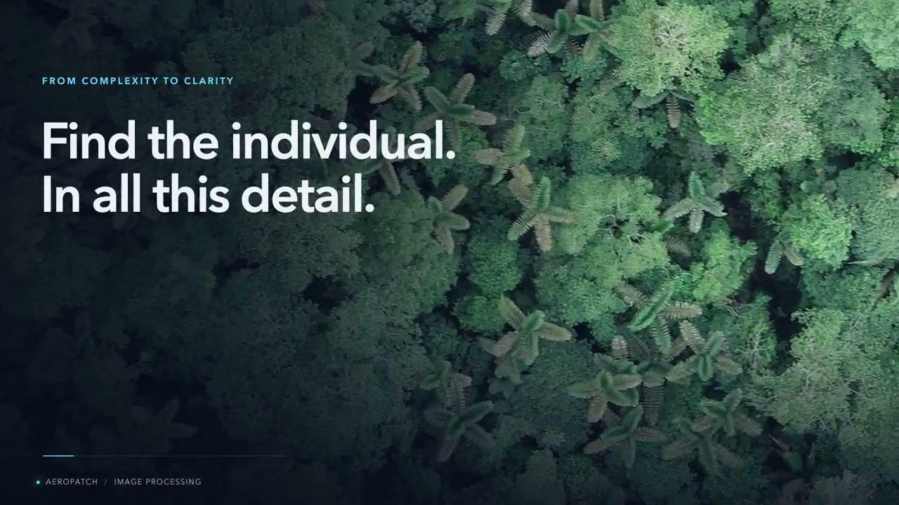
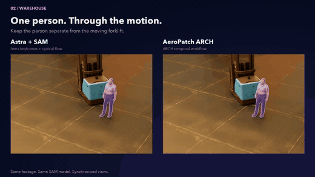
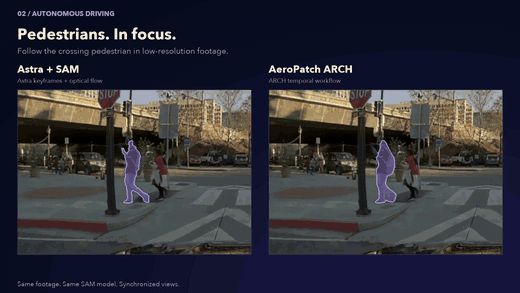
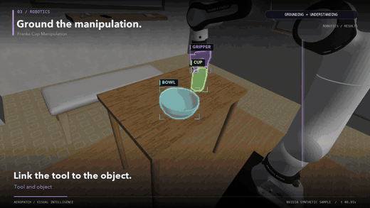
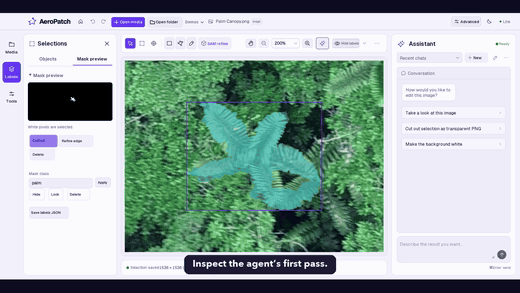
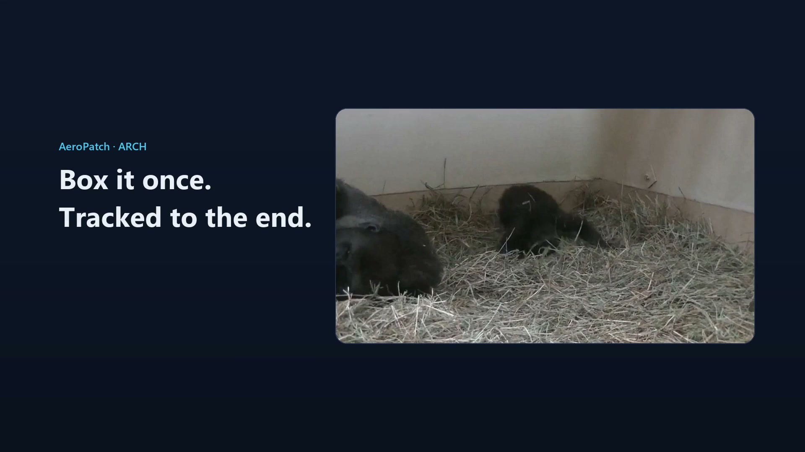

01 / IMAGE WORKFLOW
Open video ↗Find the individual.
Object discovery → masks → review
Visual Intelligence Workspace for the Physical World
Find objects. Track them across frames. Keep every result reviewable.
Public demos Private application source

Four moments from the main demo
Short loops from the recorded AeroPatch showcase.




Focused walkthroughs
Two full workflow demos from the project guide.

Object discovery → masks → review

Tracking → identity checks → review
Videos play through Google Drive. If a player is unavailable, use its “Open video” link.
The interaction loop
Image discovery combines tiled localization, bounded local recovery, and grouped SAM masks. Video uses local tracking with separate ARCH identity checks. Outputs remain drafts for human review; uncertain spans may require correction.
Current prototype
Agent-guided editing, image annotation, and video tracking with reviewable output. Dataset-scale Physical AI curation is a future research direction.
The team
Zishan Shao · Sicheng Song · Wenhao Wu · Lixun Zhang · Ting Jiang · Yiming Qin · Yuejia Liu · Jinhee Kim · Kangning Cui · Fan Yang · Yiran Chen